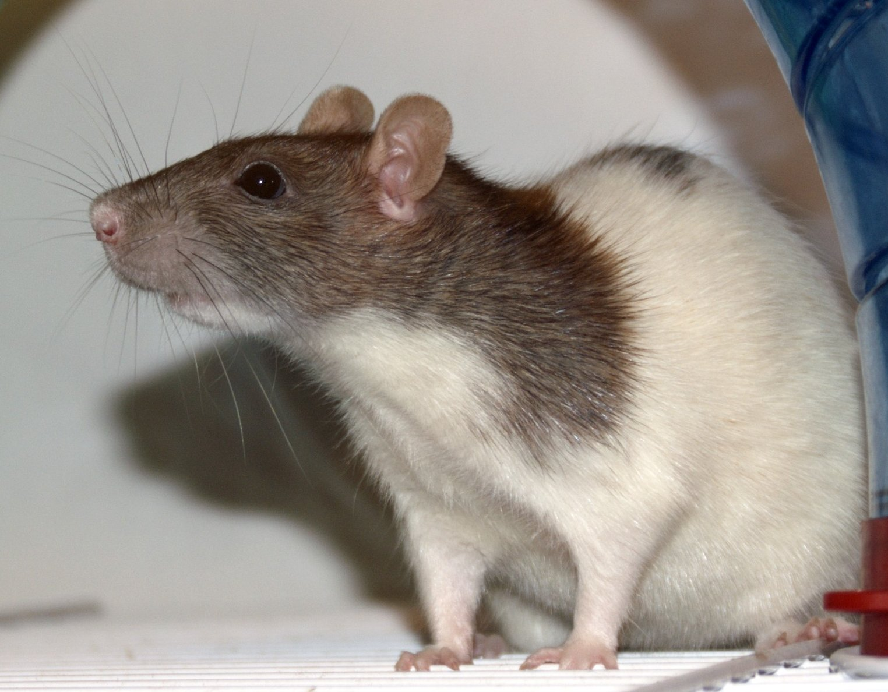

Post de jellinjellin23
@jelliegraves
· 3h
Tenho certeza absoluta de que existe algum r̷e̷t̷a̷r̷d̷a̷d̷o̷ ser humano que encara essa coisa e pensa: “Minha nossa, que coisa adorável!” ou ainda “Meu Deus, eu queria um desses pra mim!”.
Tá, não vou mentir, dá até pra entender o motivo. Afinal, eu mesma tive esse pensamento quando a vi pela primeira vez, seduzida pela estética inofensiva que ela faz questão de ostentar.
MAAAAAS… Como já dizia o mais antigo e persistente dos ditados populares: as aparências enganam.
E, meus amigos, aprendi essa lição da maneira mais árdua possível no exato instante em que cruzei o caminho dessa desgraça disfarçada de fofura.
E sim, eu vou contar tudo o que aconteceu pra vocês.

580 mil Retweets
980 mil Curtidas
300 mil Salvos